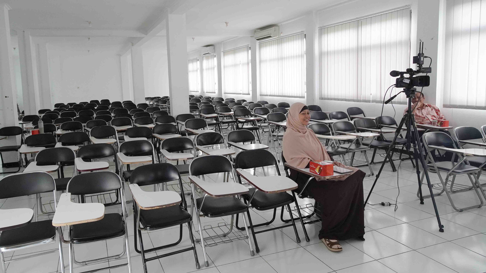
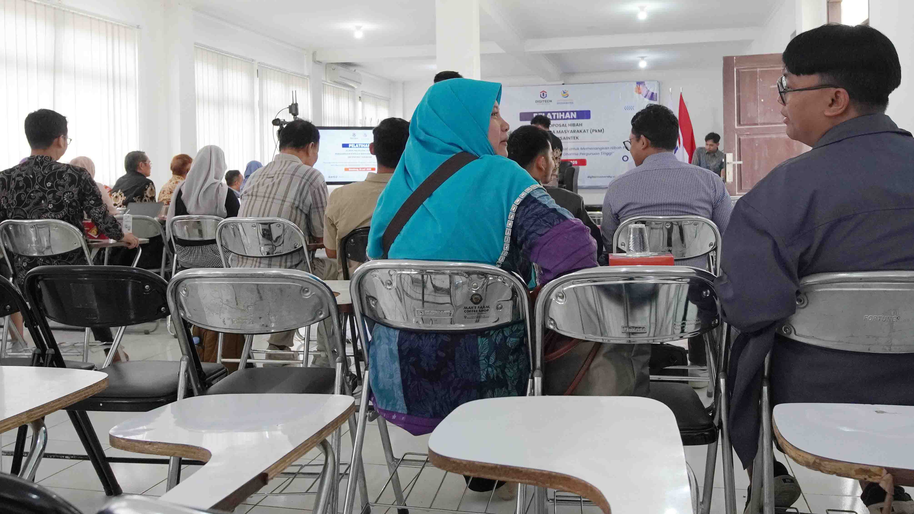
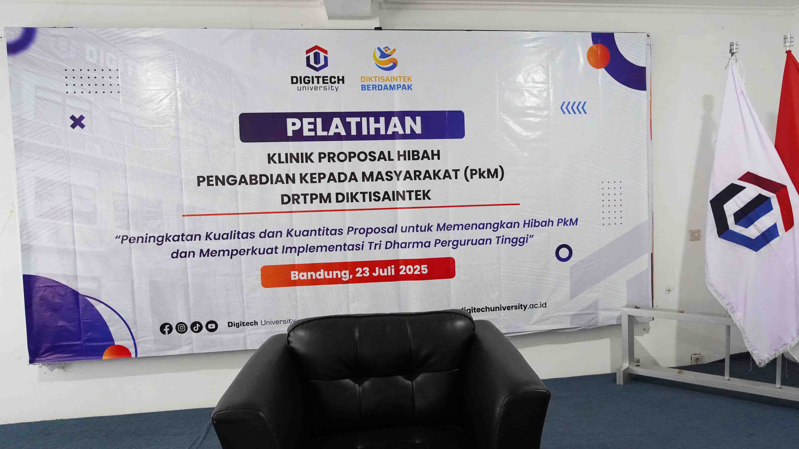
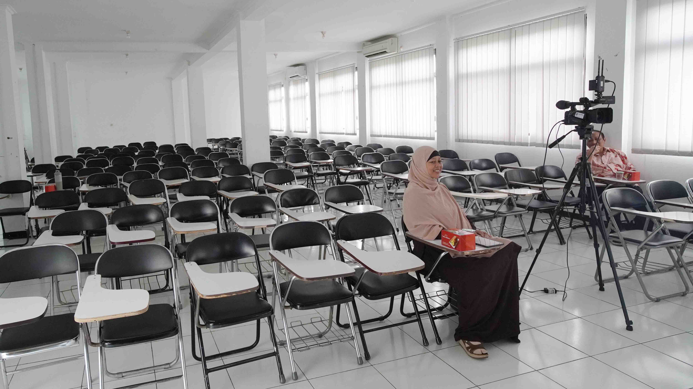
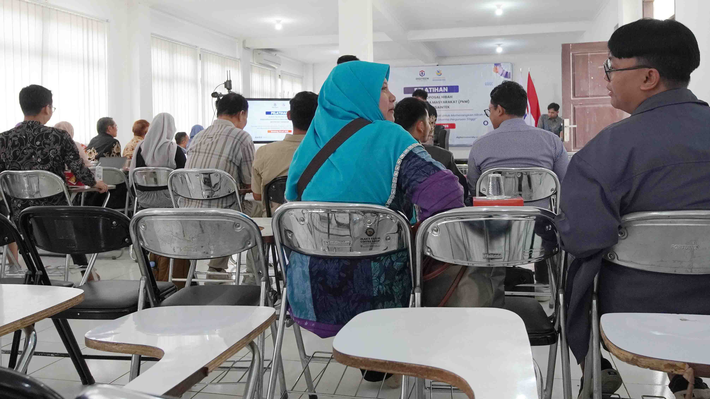
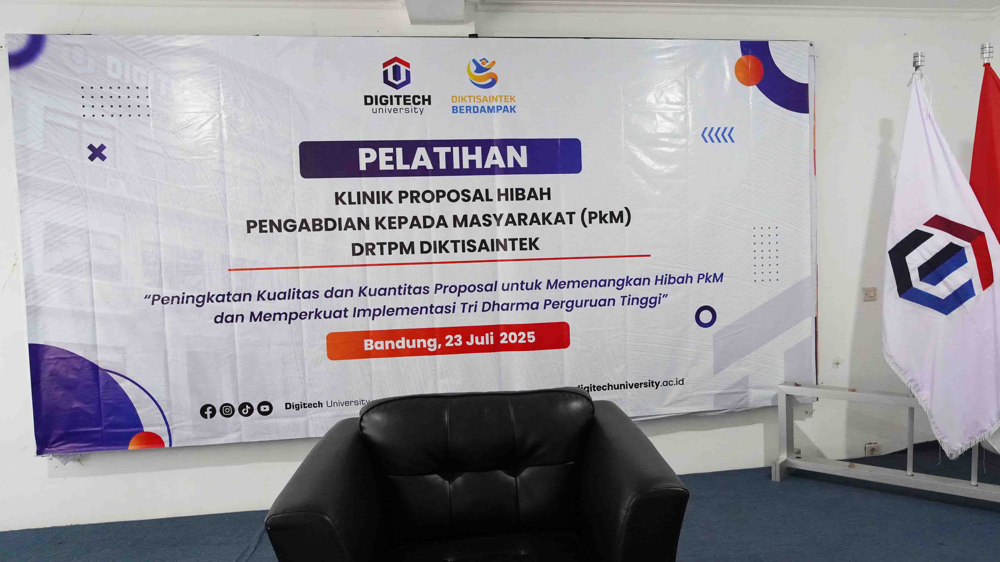

" KLINIK PROPOSAL HIBAH PENGABDIAN KEPADA MASYARAKAT DRTPM DIKTISAINTEK "
Bandung, 23 Juli 2025 — Dalam upaya meningkatkan kapasitas dosen dalam menyusun proposal hibah pengabdian kepada masyarakat, telah diselenggarakan kegiatan Klinik Proposal Hibah Pengabdian kepada Masyarakat DRTPM Diktisaintek di Bandung. Kegiatan ini difokuskan pada peningkatan kualitas dan kuantitas proposal hibah yang diajukan ke Direktorat Riset, Teknologi, dan Pengabdian kepada Masyarakat (DRTPM).
Klinik proposal ini diikuti oleh dosen dan peneliti dari berbagai perguruan tinggi, khususnya dari rumpun ilmu sains dan teknologi (Saintek). Para peserta mendapatkan bimbingan langsung dari narasumber berpengalaman yang merupakan reviewer nasional hibah pengabdian. Materi yang disampaikan mencakup strategi penyusunan proposal yang efektif, kesesuaian dengan panduan DRTPM, hingga tips memperkuat relevansi dan kebermanfaatan program bagi masyarakat.
Kegiatan ini juga menjadi ruang diskusi aktif yang mendorong pertukaran ide dan pengalaman antar peserta. Dengan pendekatan interaktif, peserta dapat melakukan evaluasi langsung terhadap draft proposal masing-masing dan menerima masukan konstruktif dari para pendamping.
Melalui kegiatan ini, diharapkan jumlah proposal hibah pengabdian yang lolos seleksi dapat meningkat secara signifikan. Lebih jauh, kegiatan ini turut memperkuat implementasi Tri Dharma Perguruan Tinggi, khususnya dalam menjawab tantangan dan kebutuhan riil di tengah masyarakat.